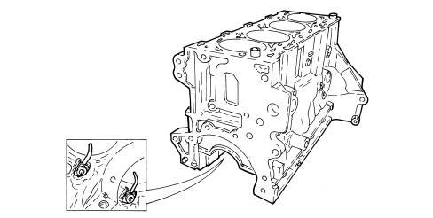

INTRODUCTION - ENGINE CRANKCASE
- Path
- Descriptions > 10 ENGINE > 1012 ENGINE CRANKCASE > INTRODUCTION - ENGINE CRANKCASE
- Kind
- system description
- Applies to
- engines: 1.8; all production periods
- Interactive page
- https://sloeber94.github.io/elrnDB/alfa/159/en/#/939005750
Applies to: engines: 1.8; all production periods
SPECIFICATIONS
The engine block is made of high mechanical strength spheroid cast iron.
The crankshaft is supported by five main bearings.
The cylinder liners/bores are directly in the cylinder block/crankcase.
Special channels in the crankcase walls carry coolant and lubrication fluid.
The lower part of each cylinder liner/bore contains a jet that sprays oil onto the piston crown to cool it and to ensure the gudgeon pin is lubricated.
